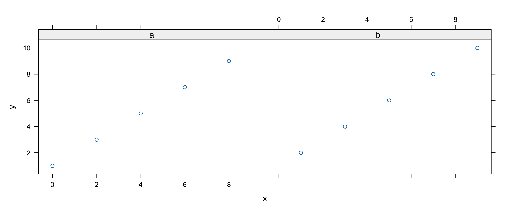
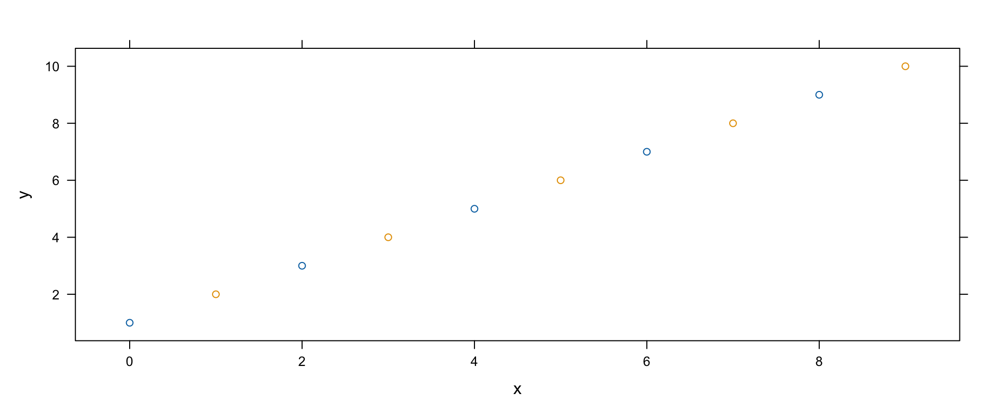
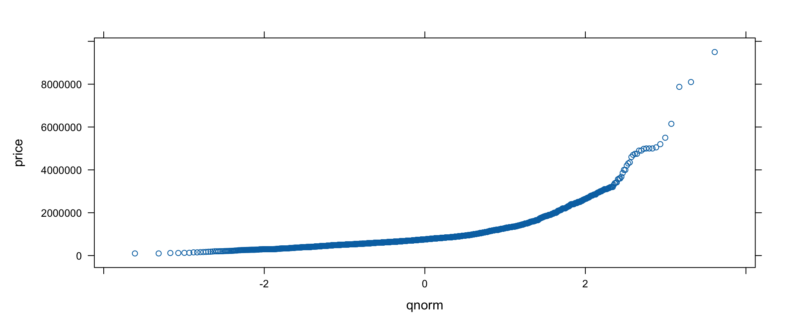
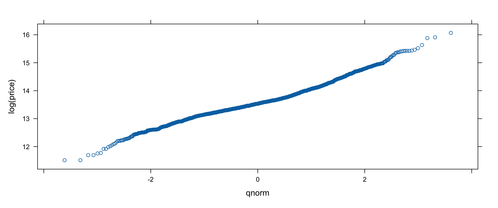

第十四章：Lattice 繪圖
2026-06-08
lattice 的引數很一致：先放公式（用位置傳——它的名字改過！），再放 data。同一份玩具資料三種畫法：


y~x|z 唸作「y 對 x，以 z 為條件」。
各星期幾的出生數（1＝週日）：
平日的寶寶遠多於週末——意外吧！是生產方式造成的嗎？按星期×方式列表（剔除未知）：
Cleveland 點圖一個類別一個點——比長條安靜，適合較大的表。週間型態有季節性嗎？按週×月×方式列表再畫：
季節間略有起伏；週間型態整年不變。
出生體重按胎數分——注意面板按字母序排列（所以水準名前面加了數字），且預設以方形面板填滿空間：
用 layout 疊直行，方便比較：
各組內大致常態；平均體重隨胎數遞減。（其他引數：type ＝ "percent"／"count"／"density"，分組距用 nint／breaks／endpoints／equal.widths。）
一條平滑曲線取代長條——而且能疊。42.7 萬筆觀測，關掉逐點帶狀（plot.points=FALSE）：
密度圖疊加得很優雅——把條件變數改成分組變數：
價格從 10 萬到 950 萬美元——直覺上就不會常態：


取對數後漂亮地拉直了。再按房間數分組——以平滑線取代散點（type="smooth"，這個引數會流進面板函式），用明確的子集讓圖例乾淨：

線各自分離、房間越多越高——同一招也適用於坪數六分位（Hmisc::cut2(squarefeet, g=6) 當 groups）與街區。
價格 vs. 坪數——先天真地畫，再修剪（價格 < 400 萬、< 6,000 平方英尺）並按郵遞區號分面板、自訂 strip：


分區之後線性關係鮮明許多——按街區分（price~squarefeet|neighborhood，配 pch=19, cex=.2）標籤更好讀、故事相同。
價格分布隨時間的變化——用 cut 把日期取整到月。原始嘗試被離群值淹沒；取對數、轉直、旋轉標籤：
中位數動得不少；四分位距動得較少；高價端明顯萎縮——但分布的基本形狀逐月穩定。（量的提醒：資料始於 2 月中、止於 7 月中——那兩個月別過度解讀。）
平面網格、第三維上色（由 panel.levelplot 繪製；重點引數 at、cuts=15、region、colorkey、col.regions、contour）。座標太精細不能直接畫——先 cut 分箱再 table：

想看各區平均價格？把 table 換成 tapply：